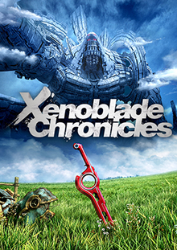
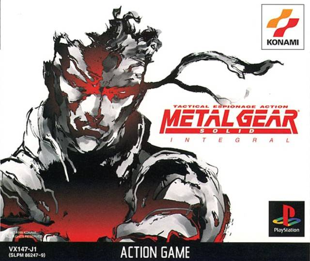
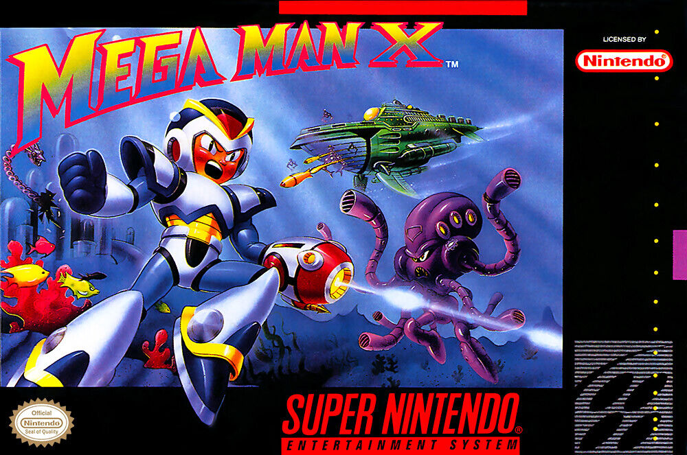

This is Devil May Cry 1 and it was Hideki Kamiya that directed the game.
It was my first hack and slash video game with amazing narrative and voice actors. The characters in this game are way too cool to ignore.
Inspiration
This is Devil May Cry 1 and it was Hideki Kamiya that directed the game.
It was my first hack and slash video game with amazing narrative and voice actors. The characters in this game are way too cool to ignore.

This is Xenoblade Chronicles and it was Tetsuya Takahashi that directed the game.
I fell in love with the chracters, creatures and world building of this game, on top of the narrative. It's a beautiful game with unique gameplay, characters and plot twists.

This is Metal Gear Solid and it was Hideo Kojima that directed the game.
I grew up watching movies with my Dad and found out that Hideo loves movies as well. He incorporates all of his movie knowledge into his games and have started creating a new genre for video games.

This is Mega Man X and it was Yoshihiro Iwamoto that directed the game.
This was my very first platformer game that wasn't mario. I love mechs and robots growing up and I still do. This game holds a special place in my heart for its difficulty, characters and bosses.